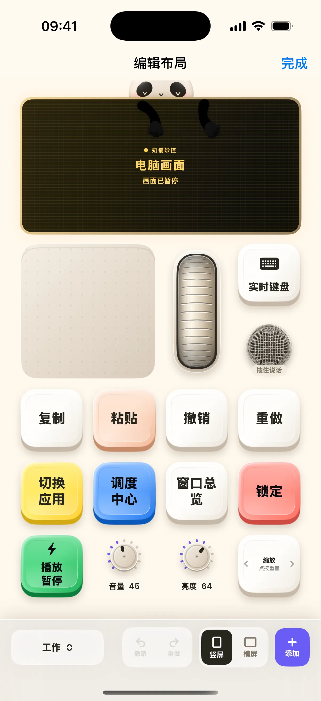

智能家居布局直接在 iPhone 或 iPad 上连接已有 Home Assistant 或 Apple 家庭，不依赖 Mac。第一次进入时先添加来源，再把设备放到布局里。开关、滑杆和旋钮依照设备实际支持的能力生成，可以继续用原有编辑器调整。
从已有家庭开始连接
Home Assistant 使用服务器地址和长期访问令牌；Apple 家庭通过系统 HomeKit 授权读取现有家庭与场景。当前默认包提供令牌连接，不承诺已启用 Home Assistant 浏览器登录。连接成功后，再选择要添加的设备。
每台设备只展示能做的事
灯光可以提供开关、亮度、色温或颜色，窗帘可以提供开关、停止与位置，温控显示目标温度和模式，传感器显示读数。具体控件来自设备能力；只读传感器不会出现可写操作，未知值也不会被替换成虚假的数字。

用现有布局编辑器整理房间
设备较多时可分成多个桌面，把睡前常用灯光和场景放在同一页，或把客厅设备留成独立一页。控件的位置与外观由布局保存，设备状态从来源刷新。断开 Mac 不会清除家居连接，因为这部分由手机本地服务运行。
Matter 与远程访问的前提
已加入 Home Assistant 或 Apple 家庭的 Matter 设备，可以通过对应平台的能力控制；应用不提供独立 Matter 配网。Thread 与外网访问需要已有家庭网络设施。门锁、车库门、安防和摄像头视频不在本次设备控制范围。
开始使用
- 打开「智能家居」并进入连接管理。
- 添加 Home Assistant 地址与令牌，或授权 Apple 家庭。
- 将需要的设备加入布局，验证开关，再调整排布。
常见问题
必须开着 Mac 才能控制家居吗？
不需要。智能家居由 iPhone／iPad 直接连接已配置的来源。
能给全新的 Matter 设备配网吗？
当前不提供独立 Matter 配网；请先把设备加入 Home Assistant 或 Apple 家庭。
本文对应 1.2.0。查看更新说明，或加入 iPhone / iPad TestFlight。